Home › Progress Documents › Final
Team Members: Shih, Cheng-Jhih · Kim, Jeonghwan · Park, Christopher Y. · Pyo, Jaechan · Zhang, Haoming
Assigned Mentor: Alexandra Wu · Submission Date: 07/31/2026 · Award opt-in: Yes
1. Introduction & Background
The number of citations a paper accrues is a widely used, if imperfect, proxy for scientific influence [1]. Citation dynamics are extremely skewed: in computer science, the most-cited 7% of papers collect over half of all citations while roughly 21% go uncited (Gini ≈ 0.73, Fig. 1) [7], a concentration that has only intensified as AI publication volume has surged [2, 6]. With thousands of AI papers posted each month, this imbalance makes it difficult to identify early which work will matter. A model that forecasts impact at (or shortly after) publication could help researchers, reviewers, and libraries surface promising papers before citations accumulate, and reveal which characteristics drive attention.
Prior work sets clear expectations for what is achievable. Text alone is a relatively weak predictor of impact, and the strongest text-based models leave most of the variance unexplained [8], whereas bibliometric and metadata signals available near publication consistently add substantial predictive power [1]. Wang et al. [2] further show that long-term impact is governed by a heavy-tailed, partly stochastic process, which bounds how much of the variance any publication-time model can recover. Our results below are consistent with all three findings.

What changed since the midterm. The midterm established a complete, leakage-free pipeline with one unsupervised model (K-Means) and two linear supervised baselines (Ridge and Logistic Regression). For this final report we added both nonlinear models promised in the midterm next-steps section:
- a Random Forest regressor and classifier with hyperparameter tuning via randomized search, permutation feature importance, and a repeat of the cluster-augmentation ablation (Section 4.4).
- an XGBoost regressor and classifier evaluated as a feature-stack ablation that adds four new blocks to the base representation (full-text LSA, affiliation/country indicators, venue identity, and leakage-safe author/reference history from OpenAlex), growing the matrix from 244 to 1,327 features (Section 4.5).
Together these give a five-model head-to-head comparison on identical splits and metrics (Section 4.6). The XGBoost feature-stack result most substantially revises the project's conclusions: it approximately doubles explained variance relative to every model available at the midterm, and it does so by adding information the earlier feature set did not contain.
Dataset
We assemble the dataset from open sources requiring no API keys: a HuggingFace arXiv corpus
(CShorten/ML-ArXiv-Papers / arxiv-community/arxiv_dataset) provides
titles, abstracts, authors, and dates, which we enrich with citation counts and affiliations from
OpenAlex [3] (key-free REST API, batched by arXiv ID/DOI). We restrict to AI/ML categories
(cs.LG, cs.CL, cs.CV) and build three temporal cohorts of
roughly 50,000 papers each. All modelling in this report uses the C1 cohort
(2018 to 2022), where citations have had time to mature.
Data sources:
2. Problem Definition
Problem. Given only features describing a scientific paper that are available at publication time (title, abstract, primary category, author count, reference count, venue frequency, affiliation and country counts, document lengths, and year), predict its fixed-window citation count. We study three linked formulations:
- Regression. Predict \(y=\log(1+\text{3-year citations})\).
- Ranking. Order papers by predicted impact and evaluate the quality of the top 10% shortlist. This matches the practical use case: surfacing a small candidate set rather than estimating an exact count.
- Binary classification. Predict whether a paper becomes highly cited, defined by the train-split top-decile threshold of ≥ 41 citations within 3 years.
Motivation. Reliable early estimates of scientific impact could help researchers, libraries, and reviewers prioritize a rapidly growing literature, and feature-importance analysis reveals which characteristics are associated with eventual citation outcomes. Because the underlying labels encode known social biases, we treat predictions descriptively rather than as measures of scientific merit (Section 4.9).
Why a learned solution is needed. The target is heavy-tailed, the useful signal is spread across heterogeneous modalities (free text plus tabular metadata), and the deployment setting is temporal, in that models must be fit on past papers and applied to future ones. No single hand-written rule covers this setting. The relevant questions are how much publication-time signal exists at all, and which model class extracts it best.
3. Methods
3.1 Data and temporal split
The corpus consists of approximately 150,000 AI/ML papers from arXiv categories
cs.LG, cs.CL, and cs.CV, divided into three temporal
cohorts. All experiments in this report use the C1 cohort with a strict temporal
split: papers published in 2018 to 2020 form the training split (24,691 papers)
and papers published in 2021 to 2022 form the held-out test split (25,308
papers). Training on the past and testing on the future is the realistic deployment
setting and prevents information from future papers leaking backwards.
| Cohort | Years | Papers | Target | Role in this report |
|---|---|---|---|---|
| C1 | 2018 to 2022 | 49,999 | Citations within first 3 years | All training and evaluation |
| C2 | 2023 to 2024 | 50,000 | Citations within first 1 year | Reserved (generalization) |
| C3 | 2025 to 2026 | 49,974 | Citations to date | Reserved (forecasting) |
C2 and C3 were held in reserve for a cross-cohort generalization study. Section 5 explains why that study was not completed.
3.2 Data preprocessing methods
Five preprocessing steps produce the 244-dimensional feature matrix used by every model:
- Target transformation. Citation counts are heavy-tailed, so the regression target is \(y=\log(1+\text{target\_citations})\). Without this, squared-error losses are dominated by a handful of mega-cited papers.
-
TF-IDF vectorization of text. Title and abstract are concatenated and
vectorized with sublinear term frequency, English stop-word removal, accent stripping, and
min_df = 5, producing 13,775 terms. - Dimensionality reduction (LSA). The sparse TF-IDF matrix is compressed to 100 dimensions with randomized Truncated SVD and L2-normalized. This makes the text block dense and small enough for tree ensembles and equalizes its scale against the metadata block.
-
Metadata scaling and encoding. Skewed count features
(
author_count,reference_count,venue_freq) receive alog1ptransform, and all nine numeric metadata fields are then standardized withStandardScaler. Theprimary_categoryfield is one-hot encoded withhandle_unknown="ignore". - Leakage control. Every learned transformer (TF-IDF vocabulary, SVD basis, scaler statistics, one-hot vocabulary) is fit on the 2018 to 2020 training split only and then applied unchanged to the 2021 to 2022 test split. No citation-derived variable is ever used as an input feature.
The resulting matrix has 244 features: 100 LSA text dimensions, 9 numeric metadata fields, and 135 primary-category indicators.
3.3 Unsupervised learning: K-Means clustering
K-Means is run on the C1 training split to discover latent topic structure and citation-impact archetypes. Two analyses are conducted with the same 100-d LSA text block: one with the standardized metadata block concatenated, and one on text features alone. The number of clusters is selected with the Silhouette coefficient and the Davies-Bouldin index. PCA, UMAP, and t-SNE are used to visualize the learned structure. Citation outcomes are used only to profile clusters after the fact, never as clustering features.
Why K-Means. It scales to tens of thousands of high-dimensional vectors at low computational cost and yields directly interpretable centroids. Because the text lives in an L2-normalized latent semantic space after TF-IDF and SVD, Euclidean distance is a reasonable similarity measure, which is precisely the assumption K-Means makes. The three projection methods are complementary: PCA preserves global variance linearly, UMAP preserves local and global neighborhood structure at scale, and t-SNE resolves local cluster organization. Agreement across all three is a robustness check rather than an artifact of one embedding.
3.4 Supervised learning: three model families
Three supervised model families are trained on the identical feature matrix and identical split, so all reported differences are attributable to the model rather than to the data.
| Model | Task | Settings | Role |
|---|---|---|---|
| Ridge Regression | Regression / ranking | alpha = 1.0, target log(1 + citations) |
Linear baseline |
| Logistic Regression | Binary classification | C = 1.0, class_weight = "balanced", max_iter = 2000, decision threshold p ≥ 0.5 |
Linear baseline |
| Random Forest Regressor | Regression / ranking | Untuned: n_estimators = 500, max_depth = None, min_samples_leaf = 2, max_features = "sqrt"Tuned: n_estimators = 300, max_depth = 20, min_samples_leaf = 10, max_features = "sqrt" |
Nonlinear model |
| Random Forest Classifier | Binary classification | Same depth/leaf settings. The tuned variant adds class_weight = "balanced" |
Nonlinear model |
| XGBoost Regressor | Regression / ranking | Early stopping on a temporal validation fold (papers from 2020), then refit on the full
train split with the selected n_estimators |
Nonlinear model (boosting) |
| XGBoost Classifier | Binary classification | Same early-stopping protocol. Decision threshold tuned for F1 on the 2020 validation fold
rather than left at p ≥ 0.5 |
Nonlinear model (boosting) |
Why these models. Ridge and Logistic Regression are the natural first choice for a high-dimensional, partly sparse representation: L2 regularization controls variance, and the coefficients are directly readable. They establish how much signal is linearly accessible. Random Forest then measures how much additional signal is available nonlinearly. Bagged trees capture interactions (e.g. reference count mattering differently inside vision versus theory topics) and thresholds without manual feature crossing, are insensitive to feature scaling, and supply impurity- and permutation-based importances [4, 5]. XGBoost [9] completes the picture from the other direction: where a forest averages independent deep trees to reduce variance, boosting grows shallow trees sequentially so that each corrects its predecessors' residuals, and it offers finer regularization (learning rate, subsampling, L1/L2 penalties, depth limits) plus native handling of the wide sparse blocks introduced in Section 3.6. Comparing bagging against boosting on identical inputs distinguishes a general benefit of nonlinearity from a benefit specific to one nonlinear estimator.
Hyperparameter tuning. The Random Forest configuration was selected with
RandomizedSearchCV over n_estimators, max_depth,
min_samples_split, min_samples_leaf, max_features, and (for
the classifier) class_weight, using 5-fold cross-validation within the training
split, scored on negative RMSE for regression and ROC-AUC for classification. We report both
the untuned and tuned models because the comparison is itself informative
(Section 4.4).
3.5 Transferring unsupervised structure into the supervised models
To test whether the unsupervised stage contributes anything the supervised features do not already contain, the fitted text-only \(k=8\) K-Means model is exported and used to augment the supervised matrices with two feature groups: cluster-id one-hot indicators (8 columns) and distances to all eight centroids (8 columns), expanding the matrix from 244 to 260 features. The K-Means model, the TF-IDF vectorizer, and the LSA transformer are all reused from the training-split fit, so no test information enters the pipeline. This ablation is run for both the linear baselines and the Random Forest.
3.6 Extending the representation: the feature stack
Every model up to this point shares the same 244-feature base matrix, which deliberately uses only title, abstract, and simple metadata. The final supervised stage addresses a different question: not which estimator performs best on this representation, but what the representation is missing. Four additional feature blocks were built and evaluated as a block-level ablation rather than by greedy forward selection, with each stack trained and evaluated independently under the identical protocol:
| Block | Contents | Leakage control |
|---|---|---|
| Full-text LSA | TF-IDF → LSA representation of the capped full_text field, plus
full-text length metadata (+53 features). |
Vectorizer and SVD fit on train only. |
| Affiliation / country | Multi-hot indicators for frequent training-set affiliations plus country indicators from
the countries field (+518 features). |
Vocabulary of frequent affiliations derived from train only. |
| Venue identity | One-hot indicators for frequent training-set venues (+486 features). Distinct from
venue_freq, the frequency encoding already in the base block. |
Venue vocabulary derived from train only. |
| Author / reference history | Prior author productivity, prior author impact, prior high-impact rate, prior coauthor counts, matched-reference prior impact, reference age, and author-reference overlap (+26 features). | OpenAlex supplies only identifiers and edges, and every impact aggregate is computed from earlier c1 train labels. Train rows use only earlier train years, whereas test rows use only train rows. No current citation counts, h-index, or other future-aware author metrics are used. |
The history block warrants the closest scrutiny, since prior author impact could plausibly reintroduce the target. It does not: the aggregates are built strictly from labels of papers published earlier than the row being featurized, which is information a real system would have at publication time. The enrichment resolves 49,305 c1 papers, covering 98.3% of train rows and 99.1% of test rows.
Stacking these blocks grows the matrix from 244 features (base) to 1,327 (full stack). Section 4.5 reports every combination.
3.7 Evaluation metrics
- Regression: RMSE, MAE, and \(R^2\) on the log target, plus Spearman \(\rho\) for rank consistency.
- Ranking: Precision@10%, Recall@10%, NDCG@10%, and Lift@10% against the top-decile threshold.
- Classification: PR-AUC (the primary metric under 5.9% prevalence), ROC-AUC, F1, precision, recall, and accuracy, all against a prevalence baseline.
- Clustering: Silhouette coefficient and Davies-Bouldin index.
4. Results & Discussion
4.1 Unsupervised: K-Means impact archetypes
The unsupervised stage asks whether latent semantic representations of papers form meaningful groups, and whether those groups differ in citation behaviour. Figure 2 summarizes model selection for both feature sets.
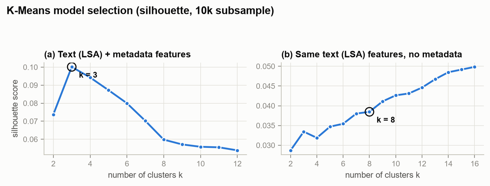
With metadata included the silhouette has a clear interior maximum at \(k=3\) (\(s=0.100\)), and the three clusters recover the arXiv category split almost exactly (99.9% cs.CV, 100% cs.CL, and the remaining cs.LG mass) without ever seeing category labels. On the text-only representation the silhouette rises slowly and monotonically with \(k\), which is typical of high-dimensional text. Rather than selecting the largest score, we fixed \(k=8\), the finest partition at which every cluster remained interpretable and well populated. Both partitions are retained: a coarse one for research domains and a finer one for topical impact archetypes.
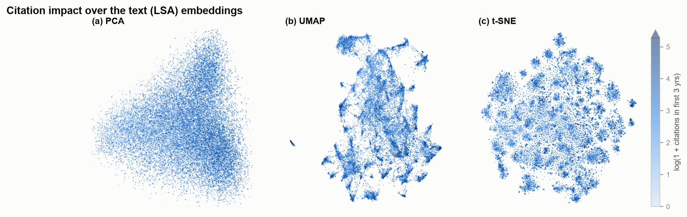
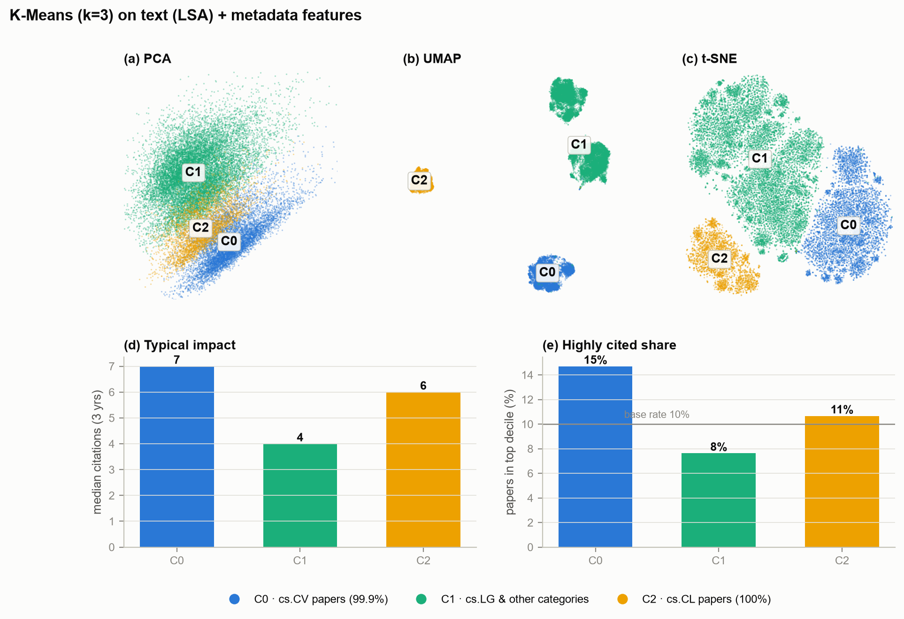
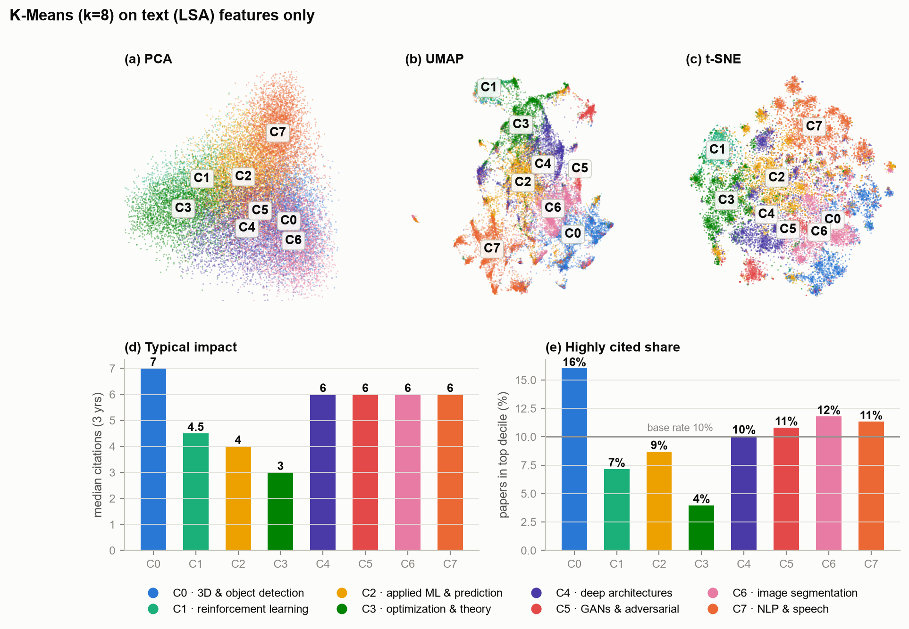
The eight text-only clusters are cleanly topical, with names assigned by hand from each cluster's highest-weight TF-IDF terms, and they separate sharply by citation outcome:
| Cluster | Archetype | Papers | Median 3-yr citations | Top-decile share | Uncited share |
|---|---|---|---|---|---|
| C0 | 3D & object detection | 3,496 | 7.0 | 16.0% | 9.8% |
| C6 | Image segmentation | 2,849 | 6.0 | 11.8% | 12.2% |
| C7 | NLP & speech | 4,030 | 6.0 | 11.3% | 11.1% |
| C5 | GANs & adversarial | 1,452 | 6.0 | 10.8% | 9.8% |
| C4 | Deep architectures | 3,436 | 6.0 | 10.1% | 11.3% |
| C2 | Applied ML & prediction | 4,714 | 4.0 | 8.7% | 13.6% |
| C1 | Reinforcement learning | 1,422 | 4.5 | 7.2% | 11.5% |
| C3 | Optimization & theory | 3,292 | 3.0 | 4.0% | 16.2% |
The spread is large: a paper in the 3D & object detection archetype is four times as likely to reach the corpus top decile as one in optimization & theory (16.0% vs 4.0%). NLP is the heavy-tail archetype, with mean 47.6 versus median 6 citations, reflecting a small number of transformer-era outliers. This independently justifies the log-transformed target. Metadata profiles add further detail: theory papers have markedly fewer authors (\(z=-0.40\)), vision papers more, and NLP abstracts are shorter (\(z=-0.31\)). UMAP and t-SNE agree on the same topical islands while linear PCA shows the same gradient with heavy overlap, so the structure is a property of the feature space rather than of one projection method.
Implication for the supervised stage. Topic membership alone carries impact information, obtained without any citation label. Section 4.7 tests whether supplying that information to the supervised models as explicit features improves prediction.
4.2 Explorer: how the clustering changes with \(k\)
Each slider recolors the maps with the K-Means labels for the corresponding \(k\). The PCA, UMAP and t-SNE layouts are fixed per feature set, since they are computed from the features independently of \(k\), so only the cluster coloring changes. This is a diagnostic view only: beyond \(k=8\) the colors leave our validated palette.
Text (LSA) + metadata features
Text (LSA) features only
4.3 Supervised baselines: Ridge and Logistic Regression
Ridge regression predicts \(\log(1+\text{3-year citations})\), and Logistic Regression predicts the top-decile label. Both are fit on the 2018 to 2020 split and evaluated on the held-out 2021 to 2022 split.
| Model | Split | RMSE | MAE | R2 | Spearman \(\rho\) |
|---|---|---|---|---|---|
| Ridge | Train | 1.193 | 0.956 | 0.179 | 0.411 |
| Ridge | Test | 1.111 | 0.880 | 0.141 | 0.395 |
The modest \(R^2=0.141\) shows that exact citation counts are hard to predict with a linear model on heavy-tailed data, but the gap between train and test \(R^2\) is only 0.038, so Ridge is limited by model capacity rather than by overfitting. The Spearman correlation of 0.395 indicates that the model is substantially more useful as a ranking signal than as a point estimator, which is how we evaluate it next.
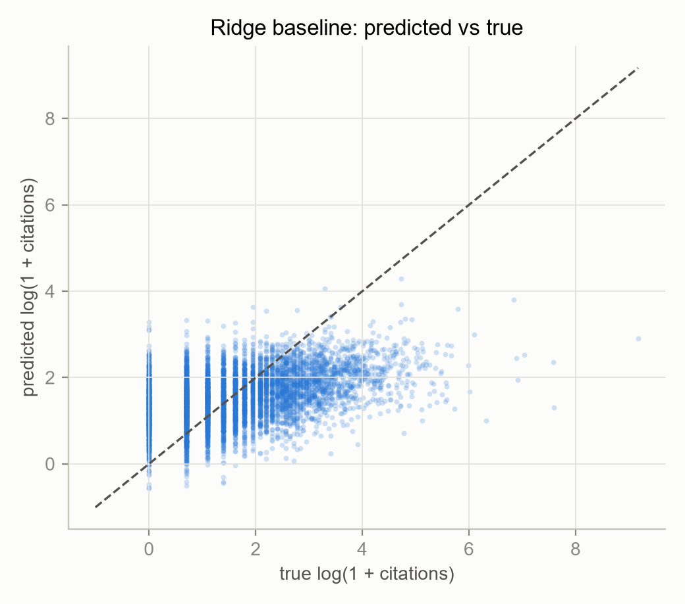
| Model | Split | Precision@10% | Recall@10% | NDCG@10% | Lift@10% |
|---|---|---|---|---|---|
| Ridge | Train | 0.297 | 0.294 | 0.655 | 2.94× |
| Ridge | Test | 0.200 | 0.339 | 0.633 | 3.39× |
Ranking the test set by Ridge score, the top 10% shortlist is 20.0% highly-cited papers against a 5.9% base rate, a 3.39× lift, and recovers 33.9% of all highly cited papers. This is the first evidence that publication-time features carry usable signal.
Classification. Under the fixed train-derived threshold (≥ 41 citations), the temporal test set is harder than the training set: only 5.9% of test papers are positive versus 10.1% in training, because the 2021 to 2022 papers have had less time to accumulate citations. Logistic Regression reaches ROC-AUC = 0.773 and PR-AUC = 0.180, roughly 3.0× the 0.059 prevalence floor.
| Model | Split | PR-AUC | ROC-AUC | F1 | Precision | Recall | Accuracy |
|---|---|---|---|---|---|---|---|
| Logistic Regression | Train | 0.263 | 0.771 | 0.316 | 0.202 | 0.719 | 0.684 |
| Logistic Regression | Test | 0.180 | 0.773 | 0.255 | 0.169 | 0.522 | 0.820 |
| Prevalence baseline | Test | 0.059 | 0.500 | 0.000 | 0.000 | 0.000 | 0.941 |
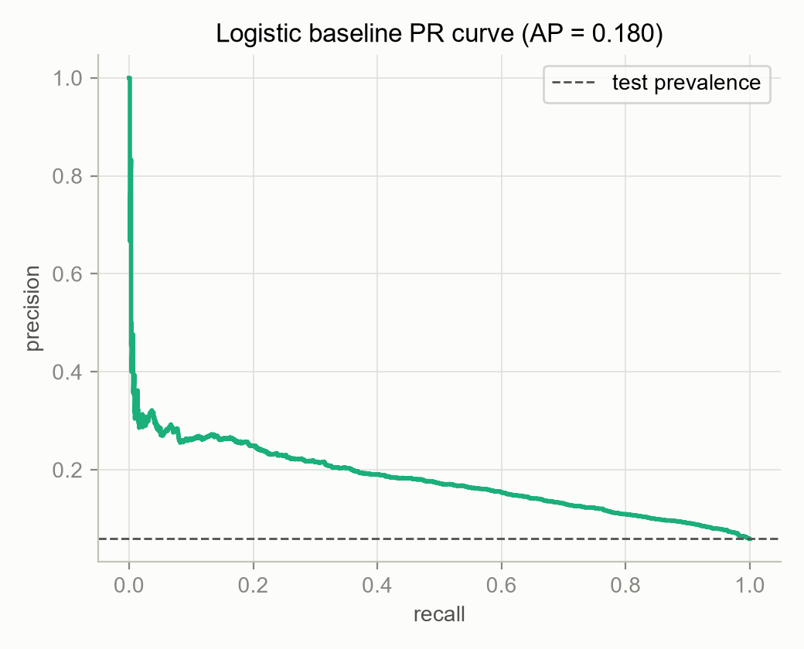
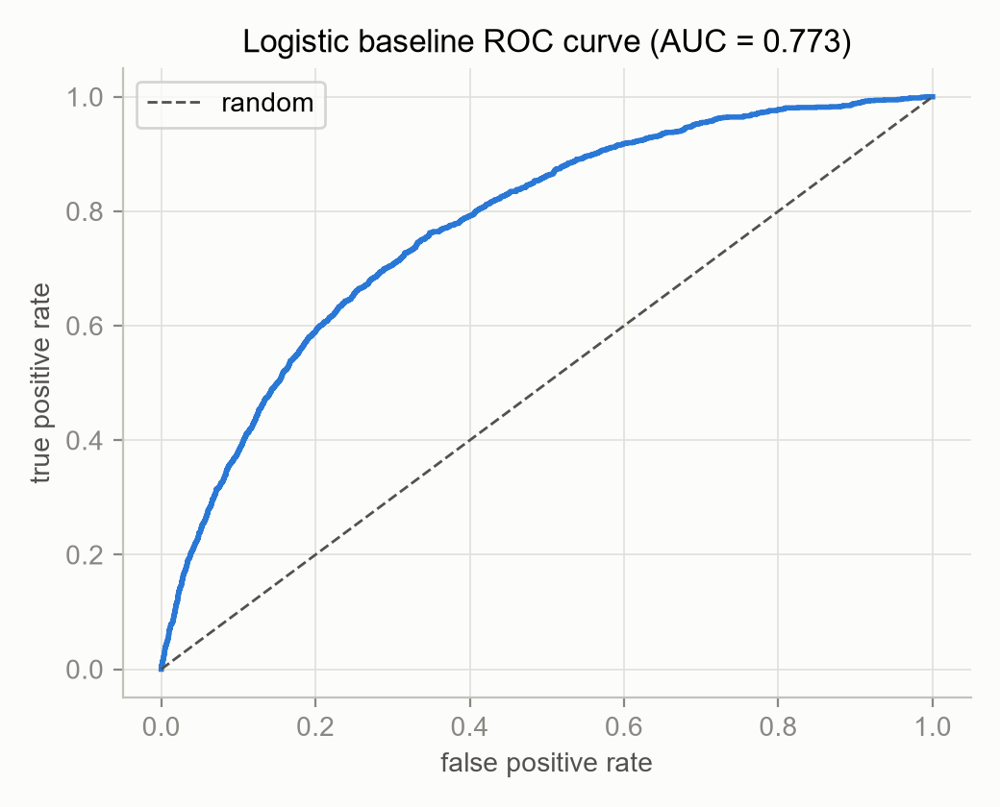
The accuracy column illustrates a known pitfall. The prevalence baseline scores 0.941 accuracy by predicting that no paper is highly cited, while the informative Logistic model scores 0.820. Accuracy is misleading at 5.9% prevalence, which is why PR-AUC and the ranking metrics are our primary criteria throughout.
4.4 Random Forest and hyperparameter tuning
Random Forest was added to test whether nonlinear structure, meaning thresholds and
interactions, recovers signal the linear baselines miss. We report an untuned configuration
(unconstrained depth) and a tuned configuration (max_depth = 20,
min_samples_leaf = 10) selected by randomized search, because the contrast
between them illustrates the bias-variance problem in this dataset most clearly.
Regression
| Model | Split | Feature set | RMSE | MAE | R2 | Spearman \(\rho\) |
|---|---|---|---|---|---|---|
| RF (untuned) | Train | Base | 0.5196 | 0.4076 | 0.8443 | 0.9851 |
| RF (untuned) | Test | Base | 1.1082 | 0.8995 | 0.1444 | 0.4578 |
| RF (untuned) | Test | Base + clusters | 1.1057 | 0.8967 | 0.1483 | 0.4572 |
| RF (tuned) | Train | Base | 0.9314 | 0.7456 | 0.4997 | 0.8605 |
| RF (tuned) | Test | Base | 1.1089 | 0.9012 | 0.1433 | 0.4605 |
| RF (tuned) | Test | Base + clusters | 1.1070 | 0.8987 | 0.1462 | 0.4558 |
Variance control does not improve accuracy. The untuned forest memorizes the training split (\(R^2 = 0.844\) train versus 0.144 test, a gap of 0.70). Constraining depth and leaf size cuts training \(R^2\) almost in half, to 0.500, yet test \(R^2\) is essentially unchanged (0.1433 vs 0.1444). The residual error is therefore not variance that regularization can remove. It is a combination of irreducible noise in the citation process [2] and distribution shift between 2018 to 2020 training papers and 2021 to 2022 test papers.
The forest's advantage lies in ranking. Spearman \(\rho\) rises from 0.395 (Ridge) to 0.4605 (tuned RF), a +16.6% relative improvement in rank consistency, even though \(R^2\) is nearly identical. Nonlinear structure improves the ordering of papers considerably more than it improves point estimates, and ordering is the deployment use case.
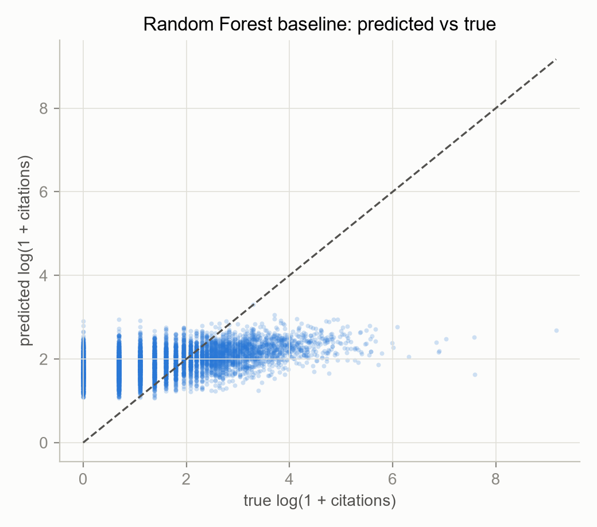
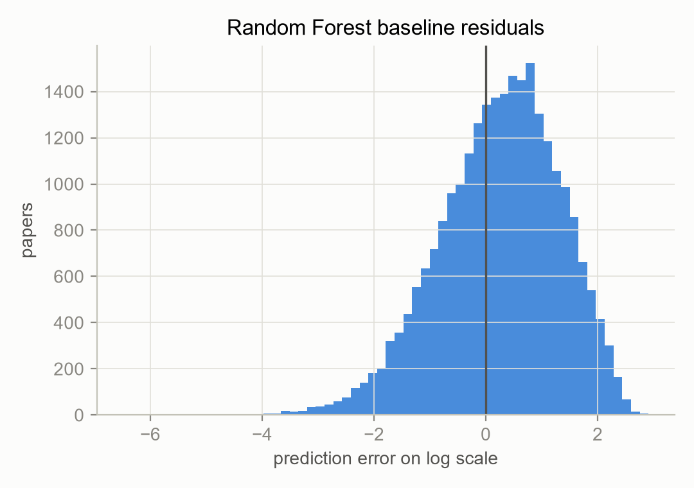
Ranking
| Model | Split | Feature set | Precision@10% | Recall@10% | NDCG@10% | Lift@10% |
|---|---|---|---|---|---|---|
| RF (untuned) | Train | Base | 0.8992 | 0.8888 | 0.9896 | 8.88× |
| RF (untuned) | Test | Base | 0.2363 | 0.4003 | 0.6664 | 4.00× |
| RF (untuned) | Test | Base + clusters | 0.2442 | 0.4137 | 0.6719 | 4.14× |
| RF (tuned) | Train | Base | 0.6769 | 0.6691 | 0.9269 | 6.69× |
| RF (tuned) | Test | Base | 0.2469 | 0.4183 | 0.6732 | 4.18× |
| RF (tuned) | Test | Base + clusters | 0.2402 | 0.4070 | 0.6707 | 4.07× |
The tuned Random Forest is the best ranker on the 244-feature base matrix: its top-10% shortlist is 24.7% highly cited papers against a 5.9% base rate (4.18× lift) and captures 41.8% of all highly cited test papers, versus 3.39× and 33.9% for Ridge. In practical terms, screening the same 2,531-paper shortlist surfaces roughly 118 additional high-impact papers compared with the linear baseline. Section 4.5 improves on this again with boosting and a wider representation.
Classification
| Model | Split | Feature set | PR-AUC | ROC-AUC | F1 | Precision | Recall | Accuracy |
|---|---|---|---|---|---|---|---|---|
| RF (untuned) | Train | Base | 1.0000 | 1.0000 | 1.0000 | 1.0000 | 1.0000 | 1.0000 |
| RF (untuned) | Test | Base | 0.2287 | 0.8083 | 0.0951 | 0.4702 | 0.0529 | 0.9406 |
| RF (untuned) | Test | Base + clusters | 0.2288 | 0.8046 | 0.1321 | 0.4209 | 0.0783 | 0.9392 |
| RF (tuned) | Train | Base | 0.9995 | 0.9999 | 0.9081 | 0.8316 | 1.0000 | 0.9795 |
| RF (tuned) | Test | Base | 0.2339 | 0.8091 | 0.3061 | 0.2529 | 0.3876 | 0.8963 |
| RF (tuned) | Test | Base + clusters | 0.2241 | 0.8049 | 0.3029 | 0.2401 | 0.4103 | 0.8885 |
| Prevalence baseline | Test | n/a | 0.0590 | 0.5000 | 0.0000 | 0.0000 | 0.0000 | 0.9410 |
Class weighting changes the operating point, not the ranking. The unconstrained
classifier is highly conservative under 5.9% prevalence: it achieves the highest precision
in the study (0.470) but flags only 5.3% of the positives, giving an F1 of only
0.095. Adding class_weight = "balanced" raises recall to 38.8% and F1
to 0.306, a 3.2× F1 improvement, while PR-AUC and ROC-AUC barely
move (0.2287 → 0.2339 and 0.8083 → 0.8091). The underlying ranking
ability is unchanged. What changes is where the 0.5 decision threshold falls relative to the score
distribution. The result is a cautionary one: threshold-dependent metrics (F1, precision,
recall, accuracy) can shift by 3× with no corresponding gain in model quality, so they should
not be reported alone for imbalanced problems.
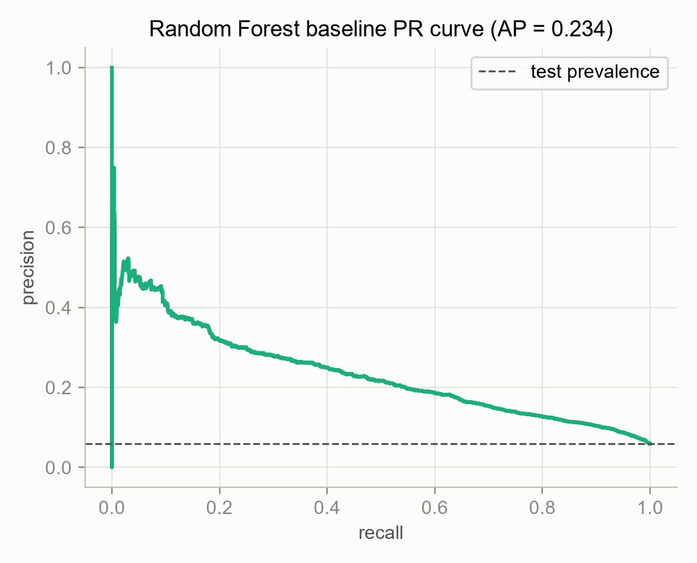
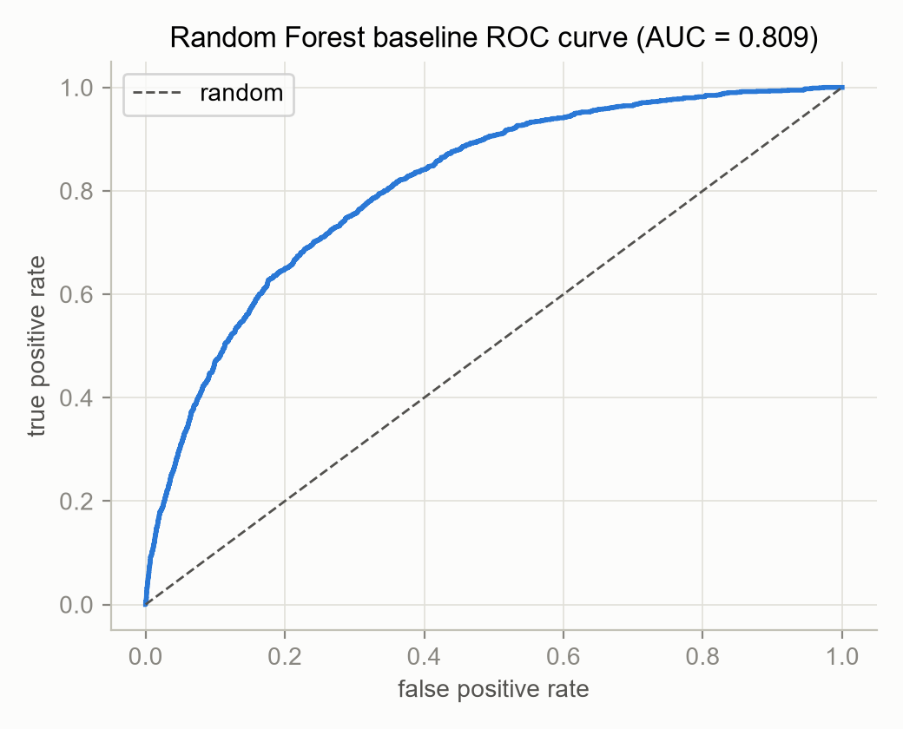
4.5 XGBoost and the feature stack
All results above share one representation, and they all land near \(R^2\approx0.14\). This section varies the representation rather than the estimator. Each of the nine feature stacks below is trained and evaluated independently with the same XGBoost regressor and classifier, the same temporal split, the same 2020 validation fold for early stopping, and the same ranking protocol, so the rows are directly comparable to each other and to Sections 4.3 and 4.4.
Regression
| Feature stack | Features | RMSE | MAE | R2 | Spearman \(\rho\) |
|---|---|---|---|---|---|
| Base (244-feature matrix) | 244 | 1.0705 | 0.8527 | 0.2015 | 0.4635 |
| + full text | 297 | 1.0628 | 0.8452 | 0.2129 | 0.4786 |
| + full text + affiliation | 815 | 1.0589 | 0.8412 | 0.2188 | 0.4823 |
| + full text + venue | 783 | 1.0590 | 0.8411 | 0.2187 | 0.4802 |
| + history | 270 | 1.0486 | 0.8373 | 0.2340 | 0.4809 |
| + full text + history | 323 | 1.0445 | 0.8331 | 0.2398 | 0.4894 |
| + full text + affiliation + history | 841 | 1.0430 | 0.8321 | 0.2421 | 0.4895 |
| + full text + venue + history | 809 | 1.0415 | 0.8284 | 0.2442 | 0.4849 |
| Full stack (+ full text + affiliation + venue + history) | 1,327 | 1.0404 | 0.8277 | 0.2458 | 0.4880 |
The ceiling was a property of the features, not of the problem. XGBoost on the identical 244-feature base matrix reaches \(R^2 = 0.2015\), a 43% relative improvement over Ridge's 0.141 and the tuned forest's 0.143, values that had agreed closely enough to resemble a floor set by irreducible noise. Adding the new blocks lifts it further to 0.2458, 74% above the best midterm-era model. Two distinct conclusions follow. Boosting extracts more from the same inputs than bagging does, and the inputs themselves were leaving substantial signal unused.
Ranking
| Feature stack | Precision@10% | Recall@10% | NDCG@10% | Lift@10% |
|---|---|---|---|---|
| Base | 0.2355 | 0.3989 | 0.6634 | 3.99× |
| + full text | 0.2434 | 0.4123 | 0.6713 | 4.12× |
| + full text + affiliation | 0.2430 | 0.4116 | 0.6769 | 4.12× |
| + full text + venue | 0.2430 | 0.4116 | 0.6734 | 4.12× |
| + history | 0.2778 | 0.4705 | 0.7212 | 4.71× |
| + full text + history | 0.2849 | 0.4826 | 0.7253 | 4.83× |
| + full text + affiliation + history | 0.2825 | 0.4786 | 0.7230 | 4.79× |
| + full text + venue + history | 0.2813 | 0.4766 | 0.7208 | 4.77× |
| Full stack | 0.2849 | 0.4826 | 0.7226 | 4.83× |
The best ranker is not the largest model. Full text + history (323 features) matches the full stack's 4.83× lift and exceeds it on NDCG (0.7253 vs 0.7226) using a quarter as many features. Against Ridge's 3.39×, the same 2,531-paper shortlist surfaces roughly 215 additional high-impact papers, and against the tuned Random Forest's 4.18×, about 96 more. Recall@10% rises from 33.9% (Ridge) to 48.3%, so nearly half of all highly cited papers are recovered from a 10% shortlist.
Classification
PR-AUC and ROC-AUC below are threshold-free. F1, precision, and recall use a decision threshold tuned for F1 on the 2020 validation fold rather than the default \(p\ge0.5\), which Section 4.4 showed can swing threshold-dependent metrics by 3× without any change in ranking quality.
| Feature stack | PR-AUC | ROC-AUC | F1 | Precision | Recall |
|---|---|---|---|---|---|
| Base | 0.2143 | 0.8017 | 0.2870 | 0.2250 | 0.3963 |
| + full text | 0.2211 | 0.8148 | 0.2965 | 0.2427 | 0.3809 |
| + full text + affiliation | 0.2208 | 0.8142 | 0.3011 | 0.2496 | 0.3795 |
| + full text + venue | 0.2304 | 0.8197 | 0.3054 | 0.2696 | 0.3521 |
| + history | 0.2537 | 0.8185 | 0.3263 | 0.3183 | 0.3347 |
| + full text + history | 0.2551 | 0.8277 | 0.3136 | 0.2891 | 0.3427 |
| + full text + affiliation + history | 0.2599 | 0.8274 | 0.3259 | 0.2932 | 0.3668 |
| + full text + venue + history | 0.2612 | 0.8304 | 0.3185 | 0.2980 | 0.3420 |
| Full stack | 0.2604 | 0.8320 | 0.3346 | 0.2794 | 0.4170 |
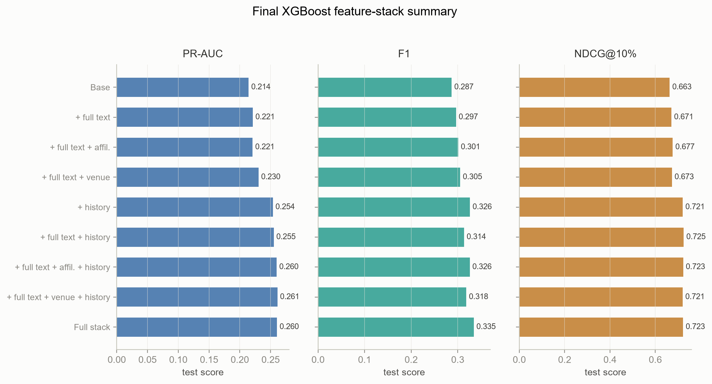
Block-level contributions. The ablation gives a clear ordering, and it does not follow the feature counts:
- Author/reference history is the single largest new source of signal, and it is also the cheapest: 26 features move PR-AUC from 0.2143 to 0.2537 and lift from 3.99× to 4.71×, more than any other block.
- Full text is genuinely complementary to history, not redundant with it. Added on top of history it improves ranking (4.71× → 4.83×), regression (\(R^2\) 0.234 → 0.240), and ROC-AUC (0.819 → 0.828). Abstracts do not capture everything the paper body contains.
- Affiliation and venue identity are real but marginal once text and history are present, despite contributing 1,004 of the 1,327 columns. They add only the final 0.002 or so of PR-AUC and slightly reduce ranking NDCG.
This reverses the usual expectation that additional features help monotonically. The 323-feature stack is the better ranker, and the 1,004 identity columns mostly add width rather than information.
4.6 Model comparison: tradeoffs, strengths, and limitations
The first four models below were trained on the identical 244-feature matrix and the identical temporal split, so their differences are attributable to model class alone. XGBoost appears twice, once on that same base matrix and once on its best feature stack, so that the estimator effect and the representation effect can be read separately. Best test values per row are in bold.
| Test-split metric | Ridge | Logistic | RF (untuned) | RF (tuned) | XGB (base) | XGB (best stack) |
|---|---|---|---|---|---|---|
| Features | 244 | 244 | 244 | 244 | 244 | 323 to 1,327 |
| R2 (log) | 0.141 | n/a | 0.1444 | 0.1433 | 0.2015 | 0.2458 |
| RMSE (log) | 1.111 | n/a | 1.1082 | 1.1089 | 1.0705 | 1.0404 |
| Spearman \(\rho\) | 0.395 | n/a | 0.4578 | 0.4605 | 0.4635 | 0.4895 |
| Precision@10% | 0.200 | n/a | 0.2363 | 0.2469 | 0.2355 | 0.2849 |
| Recall@10% | 0.339 | n/a | 0.4003 | 0.4183 | 0.3989 | 0.4826 |
| NDCG@10% | 0.633 | n/a | 0.6664 | 0.6732 | 0.6634 | 0.7253 |
| Lift@10% | 3.39× | n/a | 4.00× | 4.18× | 3.99× | 4.83× |
| PR-AUC | n/a | 0.180 | 0.2287 | 0.2339 | 0.2143 | 0.2612 |
| ROC-AUC | n/a | 0.773 | 0.8083 | 0.8091 | 0.8017 | 0.8320 |
| F1 | n/a | 0.255 | 0.0951 | 0.3061 | 0.2870 | 0.3346 |
| Recall (classification) | n/a | 0.522 | 0.0529 | 0.3876 | 0.3963 | 0.4170 |
| Train-test R2 gap | 0.038 | n/a | 0.700 | 0.356 | 0.127 | 0.174 |
No single XGBoost stack is best on every column. The 1,327-feature full stack is best on R2, RMSE, ROC-AUC, and F1, the 323-feature full-text + history stack is best on all four ranking metrics, and Spearman peaks on full-text + affiliation + history. The column reports the best value achieved by any stack, and Section 4.5 gives the full grid.
Reading the comparison model by model:
| Model | Strengths | Limitations | Best used for |
|---|---|---|---|
| K-Means (unsupervised) |
Recovers arXiv categories with no labels. Produces interpretable archetypes whose top-decile rates differ 4×. Cheap to fit, requiring no citation data at all. | Descriptive rather than predictive. Silhouette on text alone gives no clear \(k\), so the choice is a judgement call. Assumes isotropic Euclidean clusters, which is only approximately true even after L2-normalized LSA. | Explaining why impact varies, and stratifying error analysis. |
| Ridge (linear regression) |
Smallest generalization gap of any model (0.038). Trains in seconds. Coefficients are directly readable, and \(R^2\) is competitive. | Weakest ranker (\(\rho=0.395\), 3.39× lift). Compresses all predictions toward the mean, so the high-impact tail is systematically under-predicted. Cannot express interactions. | A capacity floor and a fast, transparent reference point. |
| Logistic Regression (linear classification) |
Highest classification recall (0.522) at the default threshold. Calibrated probabilities and transparent coefficients. | Lowest PR-AUC (0.180) and ROC-AUC (0.773) of the supervised models. Low precision (0.169) means most flagged papers are false positives. | A high-recall first-pass screen where false positives are cheap. |
| Random Forest (bagging, tuned) |
Clearly exceeds the linear baselines on ranking and classification: \(\rho=0.4605\), 4.18× lift, PR-AUC 0.2339, ROC-AUC 0.8091. Captures interactions automatically, supplies permutation importances, and is robust with almost no tuning effort. | Expensive to train and tune. Still overfits substantially (0.356 gap) even after regularization, and is no better than Ridge on \(R^2\)/RMSE. Threshold-dependent metrics swing 3× with class weighting, and boosting on the same inputs outperforms it on every metric. | A strong, low-effort nonlinear reference point. |
| XGBoost (boosting, feature stack) |
Best model in the study on every metric: \(R^2=0.2458\), \(\rho=0.4895\), 4.83× lift, NDCG 0.7253, PR-AUC 0.2612, ROC-AUC 0.8320. Generalizes better than the forest (0.174 vs 0.356 gap) despite far more features. Handles the wide sparse identity blocks natively, and its early stopping needs no separate search. | Most complex pipeline (external dependency, OpenAlex enrichment, per-stack refits). The strongest configurations depend on author/reference history, which raises the sharpest fairness questions in the project (Section 4.9). The best stack differs by metric, so the result is a family of models rather than a single model. | The production shortlist, which is the actual deployment task. |
The three conclusions that survive this comparison.
(i) Both the estimator and the representation mattered, and their effects can be separated. Holding the 244-feature matrix fixed, moving from Ridge to XGBoost lifts \(R^2\) from 0.141 to 0.2015. That is the estimator effect, and it is large. Holding XGBoost fixed and adding the four new blocks lifts it further to 0.2458. That is the representation effect, and it is comparable in size. Random Forest occupies an intermediate position: it is much better than Ridge at ranking yet no better at \(R^2\), so bagging deep trees recovered the ordering signal while boosting shallow ones also recovered the magnitude signal.
(ii) The apparent \(R^2\approx0.14\) ceiling was an artifact of the feature set. Three models agreed on it closely enough to resemble irreducible noise, and regularizing the forest moved training \(R^2\) from 0.844 to 0.500 without moving test \(R^2\) at all, which is the signature of a variance-free error floor. No such floor was present. The conclusion drawn from Sections 4.3 and 4.4 alone would have been incorrect, which is the principal methodological lesson of the project: agreement among models on one representation is evidence about the representation, not about the problem. What survives is the weaker and better-supported claim that citation prediction is difficult. An \(R^2\) of 0.246 still leaves three quarters of the variance unexplained, consistent with impact being partly stochastic [2] and with publication-time text explaining only a minority of it [8].
(iii) Ranking carries the practical value, and it improved most. Lift rose 3.39× → 4.18× → 4.83× across linear, bagged, and boosted models, and Recall@10% rose 33.9% → 41.8% → 48.3%. A shortlist that recovers nearly half of all highly cited papers is useful even though the underlying \(R^2\) remains modest, which is why we report ranking metrics alongside regression metrics rather than in place of them.
4.7 Does unsupervised structure help the supervised models?
Section 4.1 showed that the \(k=8\) archetypes differ 4× in top-decile rate, so cluster membership correlates with impact. We tested whether supplying that structure to the supervised models as explicit features (16 extra columns: 8 one-hot indicators plus 8 centroid distances, 244 → 260 features) improves prediction.
| Model | Metric | Base (244 feat.) | Base + clusters (260 feat.) | Δ |
|---|---|---|---|---|
| Ridge | RMSE | 1.1107 | 1.1107 | 0.0000 |
| Ridge | Spearman \(\rho\) | 0.3951 | 0.3951 | 0.0000 |
| Ridge | Precision@10% | 0.2003 | 0.2007 | +0.0004 |
| Logistic Regression | PR-AUC | 0.1798 | 0.1794 | −0.0004 |
| RF (tuned) | R2 | 0.1433 | 0.1462 | +0.0029 |
| RF (tuned) | Spearman \(\rho\) | 0.4605 | 0.4558 | −0.0047 |
| RF (tuned) | Precision@10% | 0.2469 | 0.2402 | −0.0067 |
| RF (tuned) | PR-AUC | 0.2339 | 0.2241 | −0.0098 |
| RF (tuned) | Recall (classification) | 0.3876 | 0.4103 | +0.0227 |
Cluster features do not improve prediction. For the linear baselines the effect is exactly zero to four decimal places. For the Random Forest the changes are small and inconsistent in sign, with \(R^2\) improving by 0.003 and PR-AUC dropping by 0.010. The clusters were derived from the same 100-d LSA block that is already in the feature matrix, so K-Means adds no new information. It supplies only a coarser, quantized view of a representation the models can already read continuously. Discretizing a continuous signal cannot add information, and for the forest it is mildly harmful, because splits are spent on redundant columns.
The unsupervised stage nonetheless retains value. It established that impact varies 4× across topics, and it provides the basis for per-archetype error analysis. As a feature engineering step, however, it is a null result, and we report it as such rather than selecting the single metric that happened to improve.
4.8 What actually drives predicted impact?
Permutation importance was computed on the test split (10 repeats) for the tuned Random Forest, scored on negative RMSE for regression and ROC-AUC for classification. Column indices map to the documented feature order: columns 0 to 99 are LSA text dimensions, 100 to 108 are the nine numeric metadata fields, and 109+ are primary-category indicators.
| Rank | Feature | Block | Permutation importance (regression) | Permutation importance (classification) |
|---|---|---|---|---|
| 1 | venue_freq | Metadata | 0.0484 | 0.0578 |
| 2 | reference_count | Metadata | 0.0146 | 0.0169 |
| 3 | author_count | Metadata | 0.0110 | 0.0118 |
| 4 | LSA_1 | Text | 0.0095 | 0.0115 |
| 5 | LSA_6 | Text | 0.0065 | 0.0080 |
| 6 | n_countries | Metadata | 0.0034 | 0.0014 |
| 7 | LSA_11 | Text | 0.0033 | 0.0032 |
| 8 | category indicator (col. 129) | Category | 0.0028 | 0.0063 |
| 9 | abstract_len_words | Metadata | 0.0020 | 0.0019 |
| 10 | LSA_18 | Text | 0.0019 | 0.0031 |
Metadata dominates, and one feature dominates the metadata. Venue frequency alone carries roughly 3.3× the importance of the next feature and about 5× the strongest single text dimension. Reference count and author count follow. The ordering is stable across both tasks and both importance measures (impurity-based and permutation-based), and it reproduces the literature: metadata available at publication time contributes more predictive power than text [1], while text remains a real but secondary contributor [8].
One caveat applies to reading this table. Individual LSA dimensions understate the text block's contribution, because 100 correlated dimensions each absorb a fraction of a shared signal, and permuting one leaves the others intact. The appropriate comparison is block-wise, which the XGBoost stage provides.
Block-level importance under the full stack
Aggregating XGBoost gain by feature block removes the dilution problem and reverses the apparent ranking above:
| Feature block | Classifier | Regressor |
|---|---|---|
| Title + abstract LSA | 0.382 | 0.247 |
| Full-text LSA | 0.241 | 0.182 |
| Venue identity | 0.090 | 0.219 |
| Author history | 0.102 | 0.091 |
| Numeric metadata | 0.078 | 0.088 |
| Affiliation | 0.012 | 0.064 |
| Reference history | 0.056 | 0.052 |
| Country | 0.018 | 0.028 |
| Primary category | 0.021 | 0.028 |
Text is the largest block, not metadata. Title + abstract LSA plus full-text LSA together account for 62% of classifier gain and 43% of regressor gain, far more than any metadata block. This does not contradict the permutation table above but rather corrects it. Per feature, venue frequency is the strongest single column in the project. Per block, the content of a paper outweighs the venue in which it appeared. Both statements hold, and reporting only the first would have misrepresented the model.
The blocks still carry a prestige signal, and it is concentrated where it matters most for
regression. Venue identity is the second-largest regressor block at 0.219, and
together with venue_freq in the numeric metadata it confirms that venue information
remains a major driver of predicted citation magnitude. Author history contributes a further
0.091 to 0.102. Section 4.9 discusses the implications.
4.9 Sustainability and ethical considerations
Citation counts are a biased target. They reflect venue prestige, field size,
language, author seniority, and network effects, not merit alone. Our own feature-importance
analysis makes this concrete rather than hypothetical: the strongest single predictor in the entire
project is venue_freq, and venue identity is the second-largest block driving the
regressor. A system built on these predictions would therefore tend to reproduce and amplify
existing prestige hierarchies. Well-placed papers are surfaced, read, and cited, which
is the feedback loop that produced the Gini = 0.73 concentration in
Figure 1.
The best-performing features are also the most ethically loaded. The single largest source of new predictive signal in Section 4.5 is author and reference history: prior author productivity, prior author impact, and prior high-impact rate. Adding 26 such features improved ranking (3.99× → 4.71× lift) considerably more than the 1,004 affiliation and venue-identity columns did (3.99× → 4.12×). A model that ranks new papers partly by their authorship, and by how well those authors' previous work was cited, is mechanically a seniority and reputation model. It will systematically disadvantage first-time authors, career changers, researchers returning from a break, and anyone outside established collaboration networks, the groups least served by the existing citation economy.
Two mitigations follow, the first of which we adopted. (a) We report the content-only stacks alongside the history stacks rather than only the best number, so the cost of dropping history is visible: base + full text reaches 4.12× lift against 4.83× with history. A deployment that declines to use author identity gives up roughly 15% of the lift, not the whole model. (b) We recommend that any real use of this system exclude the author-history block by default and treat it as an opt-in research variable, not a default feature. Section 5 lists the debiasing ablation that would quantify this properly.
Intended and unintended use. These models are a descriptive tool for studying citation dynamics and, at most, a discovery aid for surfacing candidate reading. They are explicitly not suitable for evaluating researchers, ranking job or grant applicants, or allocating resources. The accuracy attainable here is itself an argument against such use. Even the strongest model leaves roughly three quarters of the variance in citation outcomes unexplained, so at the level of an individual paper it remains far too uncertain to justify a consequential decision about a person.
Correlational, not causal. The analysis is observational. Feature importances describe associations under a specific model, split, and corpus. They do not support claims that adding authors or targeting a frequent venue causes citations.
Coverage and label quality. Citation labels come from OpenAlex, whose coverage is good but incomplete, and the corpus is restricted to arXiv AI/ML preprints in three categories. Conclusions may not transfer to fields with different posting and citation norms. We flagged one concrete data-quality issue during the project: the C2 and C3 cohort archives on the team drive were truncated uploads and failed integrity checks, which is one reason those cohorts remain unevaluated (Section 5).
Sustainability. The pipeline was designed to be cheap and reproducible on
commodity hardware. Compressing TF-IDF to 100 LSA dimensions before modelling is the main lever:
it reduces the feature space by two orders of magnitude relative to the raw 13,775-term vocabulary
and makes every downstream fit tractable on a laptop CPU. Every stage is seeded
(random_state = 42), all data sources are key-free and open, and intermediate
artifacts are cached so downstream stages need not refit upstream transformers.
Three deliberate choices kept the compute cost down in the final stage. The Random Forest randomized search was run once and its selected parameters reused for the cluster-augmented variant rather than repeating the search. The XGBoost stacks use early stopping against a temporal validation fold instead of a full hyperparameter sweep per stack, which is what made a nine-stack ablation affordable. The OpenAlex enrichment behind the history block was likewise computed once and cached for every stack that needs it. The efficiency result worth carrying forward is that the best ranker in the entire project uses 323 features rather than 1,327, a quarter of the width for equal or better performance, which makes it correspondingly cheaper to train and serve.
5. Conclusions & Next Steps
We built a leakage-free pipeline that predicts the citation impact of AI/ML papers from publication-time information only, and evaluated five models (K-Means, Ridge, Logistic Regression, Random Forest, and XGBoost) on identical temporal splits across regression, ranking, and classification, with a nine-way feature-stack ablation on the strongest model.
What we found:
- Publication-time features carry substantial signal. The best model surfaces a top-10% shortlist that is 4.83× enriched in highly cited papers and recovers 48.3% of them, at ROC-AUC 0.832.
- Point prediction reaches \(R^2 = 0.246\), roughly 74% above the best midterm-era model. Three quarters of the variance remains unexplained, so the task is genuinely difficult, though less so than our own intermediate results suggested.
- The \(R^2\approx0.14\) ceiling was an artifact of the feature set, not a property of the problem. Ridge, an unconstrained forest, and a regularized forest all agreed on it, and regularization moved training \(R^2\) from 0.844 to 0.500 without moving test \(R^2\), evidence that appeared conclusive but was not. Changing the estimator raised it to 0.2015, and changing the representation raised it further to 0.2458.
- Author/reference history is the largest single new source of signal, and the cheapest: 26 features beat 1,004 affiliation and venue columns. It is also the most ethically loaded, since it ranks papers partly by who wrote them.
- More features are not monotonically better. The best ranker uses 323 features, whereas the 1,327-feature full stack wins only on regression and classification.
- Block-level importance shows text outweighs metadata (62% of classifier gain), even though venue frequency is the strongest single column. Per-feature importances alone would have hidden this distinction.
- Unsupervised structure is explanatory but not additive. Topic archetypes differ 4× in top-decile rate, yet cluster features change no supervised metric measurably, because the clusters derive from a representation the models already see.
Next steps. Four directions follow from the limitations above, in priority order:
- A prestige-free ablation. This is now the highest priority, because the accuracy and fairness considerations point in opposite directions. Removing venue frequency, venue identity, and author history together and re-running the full stack would quantify what a defensible model costs. The partial evidence available, with content-only stacks at 4.12× against 4.83× with history, suggests the cost is real but modest.
- Cross-cohort generalization on C2 and C3. Every result here comes from a single temporal split. Testing a C1-trained model on 2023 to 2024 and 2025 to 2026 papers is the direct way to measure how fast it decays, and whether the history block, which depends on accumulated author records, degrades faster than content features. This requires re-uploading the C2/C3 archives, which failed integrity checks during this project.
- Per-archetype error analysis. We have the \(k=8\) cluster assignments and the per-paper predictions but report only global metrics. Breaking error down by archetype would show whether the model is uniformly mediocre or accurate on vision topics and blind on optimization/theory (the 4.0% top-decile, 16.2%-uncited regime), which changes how a shortlist should be presented.
- Richer text representations. Since block-level importance puts text ahead of metadata, and since full text improved on abstracts alone, the representation is the lever with the most demonstrated headroom. Transformer encoders (e.g. SciBERT-style embeddings, cf. [8]) replacing TF-IDF/LSA, and graph features from citation and collaboration networks, are the natural next steps. A graph representation may also capture the useful part of author history without encoding individual identity.
References
- R. Yan, J. Tang, X. Liu, D. Shan, and X. Li, "Citation count prediction: Learning to estimate future citations for literature," in Proc. 20th ACM Int. Conf. Information and Knowledge Management (CIKM), Glasgow, U.K., 2011, pp. 1247-1252.
- D. Wang, C. Song, and A.-L. Barabási, "Quantifying long-term scientific impact," Science, vol. 342, no. 6154, pp. 127-132, Oct. 2013.
- J. Priem, H. Piwowar, and R. Orr, "OpenAlex: A fully-open index of scholarly works, authors, venues, institutions, and concepts," 2022, arXiv:2205.01833.
- L. Breiman, "Random forests," Machine Learning, vol. 45, no. 1, pp. 5-32, Oct. 2001.
- F. Pedregosa et al., "Scikit-learn: Machine learning in Python," Journal of Machine Learning Research, vol. 12, pp. 2825-2830, 2011.
- S. Fortunato et al., "Science of science," Science, vol. 359, no. 6379, eaao0185, Mar. 2018.
- M. Franceschet, "The skewness of computer science," Information Processing & Management, vol. 47, no. 1, pp. 117-124, Jan. 2011.
- M. M. van Dongen, G. Maillette de Buy Wenniger, and L. Schomaker, "SChuBERT: Scholarly document chunks with BERT-encoding boost citation count prediction," in Proc. First Workshop on Scholarly Document Processing, 2020, pp. 148-157.
- T. Chen and C. Guestrin, "XGBoost: A scalable tree boosting system," in Proc. 22nd ACM SIGKDD Int. Conf. Knowledge Discovery and Data Mining, San Francisco, CA, USA, 2016, pp. 785-794.
Gantt Chart
Each member's responsibilities across the entirety of the project, from proposal through final submission.
| Task | W4 | W5 | W6 | W7 | W8 | W9 | W10 | W11 |
|---|---|---|---|---|---|---|---|---|
| Project scoping & proposal | ||||||||
| ◆ Proposal submission | ||||||||
| Data collection and cleaning | ||||||||
| Feature engineering and EDA | ||||||||
| Unsupervised learning: impact archetype clustering | ||||||||
| Supervised baselines: Ridge / Logistic | ||||||||
| Midterm report | ||||||||
| ◆ Midterm submission | ||||||||
| Random Forest: tuning & cluster-augmented ablation | ||||||||
| XGBoost: feature-stack ablation & OpenAlex enrichment | ||||||||
| Feature importance & model comparison | ||||||||
| Website build & report integration | ||||||||
| Final report, presentation & video | ||||||||
| ◆ Final submission |
Contribution Table
| Name | Final Report Contribution |
|---|---|
| Shih, Cheng-Jhih | Data pipeline maintenance: arXiv/OpenAlex collection and merging, temporal cohort construction (C1/C2/C3), leakage-free preprocessing of text and metadata features, and data-integrity checks on the cohort archives. |
| Kim, Jeonghwan | Unsupervised learning results carried into the final (K-Means model selection, archetype profiling, PCA/UMAP/t-SNE figures, \(k\)-explorer). Website build and integration of all sections into the hosted final report page. |
| Park, Christopher Y. | Final report writeup and editorial review. Consistency check of figures, tables, numbers, and IEEE references across sections. |
| Pyo, Jaechan |
Random Forest regression and classification: baseline and tuned models,
RandomizedSearchCV hyperparameter search, cluster-augmented Random Forest
ablation, permutation feature importance, and all RF figures and metric tables. Drafted the
Random Forest results section.
|
| Zhang, Haoming | XGBoost feature-stack experiments: XGBoost regressor and classifier with temporal-validation early stopping and F1-tuned decision thresholds, the four new feature blocks (full-text LSA, affiliation/country, venue identity, and leakage-safe author/reference history) including the OpenAlex enrichment pipeline behind them, the nine-way block-level ablation, block-aggregated feature importance, and the feature-stack summary figure. Also the supervised baselines carried into the final (Ridge and Logistic Regression) and the shared regression/ranking/classification evaluation harness reused by every model in this report. |